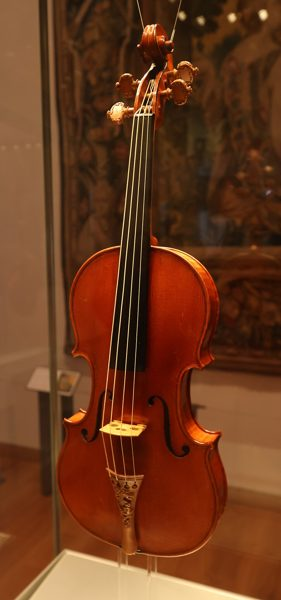
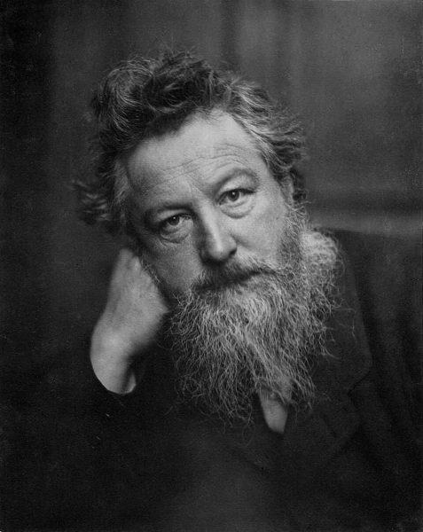
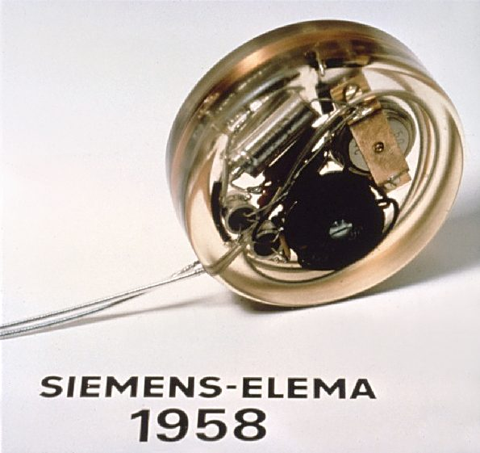

to paraphrase
… To paraphrase Winston Churchill, …
换个说法转述
先打招呼：下面不是原话。这里正好如此，丘吉尔原话说的是建筑。
第 1 章不讲物理，先给工程定调。Blockley 的定义很宽：把想法变成现实，造工具、用工具办成一件事。他最用力的一句是工程带着价值：工具和人的生活方式一起演化，谈不上中性。接着他想把科学、技术、工程、数学（STEM）理清楚，试了词典、日常用法、工程界的职称和门类，都不成，最后借哲学家 Carl Mitcham 找到一把尺：目的。科学为了知，工程为了做。§10 的第二段是全书路线图：五个「时代」。
这是正文第一章，只有序言在它之前。这一章没有原理，是全书的地基：「工程是做」「工具带着价值」「按目的分开科学和工程」这三个说法，第 2–6 章都会用到。第 2 章起作者给每段历史贴的斜体标签 need、activity、objects、knowledge，来自 §9 的米切姆四视角；§10 的五个时代就是第 2–6 章的章名。中间几节可以读快些，§9、§10 值得慢读。
别被带歪：§3 讲气候时，绕开了「人类是不是在推高全球气温」这场争论，那是写书时的措辞。2021 年 IPCC 第六次评估报告写的是：人类影响使大气、海洋和陆地变暖，这一点毋庸置疑。他那段要说的是基础设施得扛住更多极端天气，这一点不受影响。
一个人在跑实验、写代码、搭原型，他这会儿是科学家还是工程师？作者说要看什么？
读的时候带着这几个问题，读完回来对照「检查一下理解」。
原书这一章没有小标题，一口气写下来。下面的节是本站按段落分的：粗体是本站起的节名，后面是档和英文词数；再下面是这一节开头的几个英文词，在 Kindle 里搜它就能跳过去。读完打个勾。
先把这一页用到的几个概念用书外的例子讲一遍。作者拿它们推出什么，读原书时自己看。后面各页用到时会链回这里。
本书用的是最宽的定义：把一个想法变成现实，造工具、用工具办成一件事。词根不是 engine（发动机），书里追到拉丁文 ingeniarius：engineer 本来指解决实际问题很有巧思的人，和 ingenious（巧妙的）同根。
工具也定得很宽：凡是拿来出力办事、实现人的目的的都算。锤子、电钻是，靠加热制冷办事的水壶、冰箱是，椅子、楼房、电脑和互联网也是，武器也是：好用的、好玩的、害人的都在内。这里的「办事」是日常的宽义，第 2 章才把它收窄成物理的功。换成程序员的话：你写的库、脚本、服务，都是工具。
在这一页：§1 给定义和词源，§4 给工具的定义，§10 再收窄成「工程为了做」。
有一种常见的看法：工具本身无所谓好坏，全看人怎么用，菜刀能切菜也能伤人。这叫技术中立论。
价值负载说的是反过来：工具一造出来，就带着造它的人替你做的取舍；用着用着又改了人的生活方式，再决定下一样工具长不长得起来。高铁让人敢在两座城市之间通勤；一个 App 默认打开推送，多数人就一直开着。
读的时候分清两层：工具的后果很大，这一点持中立论的人也同意；工具在设计里就带着取舍，这才是价值负载真正要说的。留意作者的例子落在哪一层。
在这一页：§3 的核心判断，§2、§3 讲宗教、艺术、唱歌方式被工具改变，也是这个意思。
美国技术哲学家 Carl Mitcham 说，「技术」可以从四个角度看。拿一部手机试试：
物件：手里这台机器。知识：怎么设计芯片、怎么让电池不鼓包。活动：设计、制造、运营、维修，最后报废拆解。意志：为什么要有它，是谁的需要、谁的愿望。
前三个一看就懂，第四个最容易漏。作者抓住它往下推：方法上科学家和工程师可能分不出，目的却可以很不一样。四个视角是 Mitcham 的，「目的是 STEM 的关键区别」是作者自己推出来的，别算到 Mitcham 头上。
在这一页：§9。第 2 章起作者给每段历史贴的斜体 need、activity、objects、knowledge 就是这套标签；第 3 章讲工程师怎样边做边想时还会用上。
日常说法里，科学、技术、工程、数学（STEM）常常混着用。§5 抄的是好词典的定义，其中「技术是科学的实际应用」只是词典义；作者在 §9 批评的正是学者们默认「技术就是应用科学」。
他自己的约定在 §10：工程和技术当同义词，按目的和科学分开。科学为了知，产出理论；工程为了做，产出有用、安全、负担得起、可持续的东西；数学为了清楚精确地推理，是两边共用的语言和工具。方法很像，不知道动机，常常分不清一个人这会儿在当哪一种。
拿你自己试：跑实验比较两个模型、写成论文，是知；把更好的那个部署上线，是做。同一个人一天里能换好几回。
在这一页：§5 是词典义，§10 是作者的定义，§9 最后一段「先做后知、知再改进做」是他的另一半看法。
这是 Blockley 自己给工程史搭的框架，不是史学界通行的分期：重力、热、电磁、信息、系统，正好是第 2–6 章。
前三个是自然现象：科学家研究它，工程师拿它造工具。从金字塔到摩天楼靠对重力的理解，从生火到蒸汽机、喷气发动机靠热，电、电机、电信靠电磁。后两个不是自然现象：信息时代从电磁里长出来，又变成了复杂系统的时代。几个「时代」在时间上大段重叠，今天盖楼照样是重力的事。书后注释里他自己补了一句：核能、聚变、纳米、量子计算也该算进来。
在这一页：§10 第二段。全书照它排章，开读之前那一页也链到这里。
书里点名的人、发明和工程，挑读懂这一页用得上的讲。按在书里出现的顺序排，节号是你在书里哪一节遇到它。
作者开场引了两句话。一句他标明是「转述丘吉尔」：我们塑造工具，此后工具塑造我们。书后注释说，丘吉尔 1943 年的原话讲的是建筑：议会讨论重建被炸毁的下议院会场时，他说我们塑造建筑，此后建筑塑造我们。换成「工具」的版本，今天找得到的最早出处是 John Culkin 1967 年一篇介绍麦克卢汉的文章。另一句是 Petroski 1985 年的书名 To Engineer is Human，套的是谚语 to err is human（人孰无过）；那本书讲的正是工程怎样从失败里学。
两个人在书里一前一后，从两头说工具为什么越来越难懂。Crawford 是美国的哲学博士，开过摩托车修理铺，这本书在美国叫 Shop Class as Soulcraft（2009），英国版就是书里的 The Case for Working with Your Hands。他指责工程师把机器的内部藏起来，让人没法直接看懂。书后推荐书目里作者说，他和 Crawford 都认为「思考和动手」的分法是假的。Arthur 是经济学家，作者特意说他有工程学位；他的 The Nature of Technology（2009）说工程师为了提高性能，免不了往里加复杂度。一个说藏，一个说不得不加。
作者只拿它当例子：纪念重大周年的建筑，不只是为了过河。这是泰晤士河上的一座步行桥，北头正对圣保罗大教堂。2000 年 6 月 10 日开通，人一多桥面就左右晃，两天后关闭。桥一晃，行人不自觉地跟着桥的节奏迈步，脚下的横向力又跟桥同步，越晃越厉害。加装了几十个阻尼器后，2002 年 2 月重新开放。这正是第 2 章共振的活例子，书里没提。
作者从词典定义讲到艺术和手艺：艺术是造出意义不寻常的东西，手艺要的是专门的、尤其是手上的技能，两者的边界不清楚。斯特拉迪瓦里正好卡在中间。作者顺口加了一句：他的琴的出色品质，现代工艺至今没能超过。这句后来被几次盲测挑战了，见「今天怎么看」。

两人是工艺美术运动（Arts and Crafts movement）的源头。这场运动在 19 世纪后半到 20 世纪初，反对机器批量生产的粗劣货，推崇手工。书里写的 at the turn of the 19th century 指 19、20 世纪之交，不是 19 世纪初。Ruskin 的标准很特别：作品好不好，看它给做活的工人留了多少表达的自由；太完美、太精确反而可疑，说明有人在发号施令。作者说这是个社会主义的想法，Morris 推得最力。书里引了 Morris 两段讲演，大意是没用的东西算不上艺术，瓦匠、石匠本来都可以是快乐的艺术家。

作者给工程分类用了两个维度。书后注释里他解释了英国的四级：工程技工（engineering worker）是瓦工、木工、装配工这类有专门手艺的人；技术员工程师用成熟的办法解决范围明确的问题；IEng（incorporated engineer）大体在现有技术里干，责任更宽；特许工程师（chartered engineer）领头，范围最宽，最要独立判断。美国不用 chartered，大致对应 professional / registered engineer。civil 在 18 世纪指一切非军事的工程，今天专指土木和基础设施。
§8 的医学工程例子。起搏器是一个电池供电的小发生器，埋在锁骨下方的皮下，导线顺着静脉接到心脏；书里说最常装的是按需起搏，心跳低于设定值（通常每分钟 60 次）才接手。书里说英国自 1958 年第一台以来装了约 50 万台。世界上第一台植入式起搏器是 1958 年 10 月在瑞典斯德哥尔摩的卡罗林斯卡医院装上的，Rune Elmqvist 和 Åke Senning 做成，病人 Arne Larsson 一生换了二十多台，活到 86 岁。所以 1958 年的第一台在瑞典，不在英国。

作者说科学哲学是一门成熟的学问，可除了少数例外，学者们很少谈工程；谈的人，多数默认工程就是技术、技术就是应用科学。Mitcham 是例外里最重要的一位，做过技术哲学学会（Society for Philosophy and Technology）的第一任会长。他的 Thinking through Technology（1994）被作者列进推荐书目，说是少见的工程哲学专著。他的四个视角见「先用中文过一遍」。
读英文原书时值得停一下的词和句：工程里的熟词生义、英式说法、作者的比喻。灰色斜体是原句里连续的几个词，在 Kindle 里搜它就能找到；标「每个字都认识」的，是每个词都眼熟、合起来意思却变了的，最容易读错。点「记下」收进词本。
下面是作者在这一章里的主张，本站按主张之间的逻辑重排，不按原书顺序；每条后面是节号，拿不准就回书里那一节再读一遍。
工具定得同样宽：凡是拿来出力办事、实现人的目的的都算，锤子、冰箱、椅子、桥、互联网，好用的和害人的都在内。他说人会造工具已经了不起，更了不起的是用工具弄懂世界，再造出更巧的工具。
§1 §4很多人以为工程的产物本身无所谓好坏，全看人怎么用。他说工具和人一起演化，嵌在历史和文化里：运河开了贸易，铁路让人能去海边度假，新鲜食物、报纸、信件跑得更快，这又养出了让汽车长起来的环境。唱歌的方法、宗教和艺术的表达也被工具改过。
§3But engineering is value-laden social activity – our tools have evolved with us and are totally embedded in their historical, social, and cultural context.— §3。本站译：可是工程是带着价值的社会活动，我们的工具和我们一起演化，完全嵌在它们的历史、社会和文化背景里。
工业革命以来，许多工具的内部只有专家看得透。他说这让理清 STEM 变得急迫：民主社会要管好工程，就得懂一点它能给什么、将来可能给什么，尤其是永远给不了什么。气候和越来越多的极端天气是他举的例子。
§1 §3好词典的定义各自清楚，他却说混乱来自这些词的发展史。日常的六种用法、四级职称和六大门类有用，可都出自工程内部。转向学界，除了少数例外，学者很少谈工程，多数默认工程就是技术、技术就是应用科学。
§5 §7 §9他借 Mitcham 的第四个视角「意志」：方法可能分不出，目的可以很不一样。本书把工程和技术当同义词，目的是造出有用、安全、负担得起、可持续的东西。他还认为做先于知，知再改进做，两样交替领先、一起往前走。
§9 §10Science is an activity of ‘knowing’, whereas engineering and technology are activities of ‘doing’— §10。本站译：科学是「知」的活动，而工程和技术是「做」的活动。
合起来：这一章不讲原理，给全书定了三个约定：工程是做，工具带着价值，科学和工程按目的分。五个时代是他接下来讲故事的顺序，每一章讲人借一样东西来做事。
书 2012 年出版。下面挑出这一页里能被后来的研究或事情检验的说法，分「书里 / 当时 / 今天」几栏，并给一个结论。结论判的是标题里「书里的说法：」后面那一句。全书的这一节汇总在今天怎么看。
读完作者的主张，再看它站不站得住。每一块摆出三样：主流怎么看，作者怎么看，本站的评论。最后一句是本站对这一页的总体判断。
主流看法：Herbert Simon 在《人工科学》（The Sciences of the Artificial，1969）里也按目的分：自然科学问事物是怎样的，设计问事物应当怎样，他把工程归到设计这边。技术史家 Walter Vincenti 则强调工程有自己的一套知识，不全从科学来（见第 2 章的「本站怎么看」）。两边都不接受「工程就是应用科学」。
作者的看法：本书把工程和技术当同义词，和科学、数学按核心目的分开：科学为了知，工程为了做；方法很像，不知道动机常常分不清。§10
本站的评论：这把尺比「工程就是应用科学」好用：它不论先后，也不分高低，第 3 章蒸汽机比热力学早一百多年也放得进去。弱点是目的属于人，也属于那一刻：同一个人上午做实验、下午上线，换了两次身份。作者自己写的也是「常常分不清」。还要记住，工程和技术当同义词是他的约定，§5 抄的词典义正相反。
主流看法：科技与社会研究（STS）大体站在「工具不中性」这边。最常被引的是政治学家 Langdon Winner 1980 年的文章《人造物有政治吗？》：他说纽约的规划者 Robert Moses 把长岛公园大道上的立交桥修得很低，公交车过不去，靠公交出行的穷人和黑人就难去海滩。这个例子后来也被质疑：社会学家 Bernward Joerges 1999 年撰文说，公园大道不让公交上去有好几层原因，不是只靠桥修得低。
作者的看法：很多人把工程的产物看成道德中立，好坏全看人怎么用；他说工程是带着价值的社会活动，工具和人一起演化。§3
本站的评论：结论站得住，论证差一步。运河、铁路改了人住哪、吃什么，说明的是后果大，持中立论的人也会同意。要说工具本身带着价值，得像 Winner 那样指出设计里就写进了取舍，哪怕他的例子本身也有争议。程序员最熟的是默认值：推送默认打开、自动续费默认勾上，多数人不会去改。
主流看法：经济学家给技术史分段，常按「通用目的技术」（general purpose technology）：蒸汽机、电力、信息技术这类渗进几乎所有行业、带出一连串后续发明的技术。作者在 §3 点名的经济学家 Richard Lipsey，和合作者 2005 年写的就是一部按这个思路梳理技术史的书。
作者的看法：工程的故事自然分成五个时代：重力、热、电磁、信息、系统；前三个是科学家研究、工程师拿来造工具的自然现象。§10
本站的评论：当成全书的目录很好用，当成历史分期要打折扣。前三个按自然现象分，后两个按用途和规模分，标准换了；时间上也大段重叠，今天的摩天楼还在重力的「时代」里。书后注释里他自己补了核能、纳米、量子计算，说明五格装不下。
本站的总体看法：这一章是全书的说明书，没有原理，定了三个约定：工程是做，工具带着价值，按目的分科学和工程。§3、§9、§10 最值得读，§6、§8 可以跳。几处要打折扣：丘吉尔那句是转述，工业革命的年代写早了，斯特拉迪瓦里那句今天站不住。
先在心里答，再点开。答错的那题，回书里把对应那一节再读一遍。
书里追到拉丁文 ingeniarius 一系，意思是解决实际问题很有巧思的人。作者特意说，它不是从「管发动机的人」来的。
工具和人一起演化，嵌在历史和文化里，不是造好了摆在那儿等人决定好坏。运河、铁路改了贸易、住处、度假和吃的东西，又养出了下一代交通工具。
它们都被用来出力办事、实现人的目的。这里的 work 是宽义的「为目的出力」，第 2 章的功是物理定义，力乘沿力方向走过的距离，不一样。
土木修水库、大坝和大管道；化工在水厂净水、监测水质；机械装水泵、阀门、水表；电气供电；计算机管控制系统。书里还提到电子工程师做监测流量的仪表。
四个视角（物件、知识、活动、意志）是 Mitcham 的。作者抓住第四个，推出 STEM 的分界在目的，这一步是作者自己的。
靠目的：科学为了知，工程为了做。他说方法像到不知道动机就常常分不清，并没有说分得清。
人先会做，后会知，知又反过来改进做，两样交替前进；作者拿婴儿先会动、后有自我意识打比方。这是作者自己的看法，不是 Mitcham 的。
用一句话说这一页：
想一想：拿你这周做的三件事试试作者的尺子：哪件是「知」，哪件是「做」？有没有哪件两样都是，分不开？
读过又忘了，从这里想起来。挑的是这一页最值得记住的例子和说法，不按原书顺序；每条后面是节号，想细看就回书里那一节。全书各页的这一节都收在全书回顾。
一句话：工程是把想法变成现实；工具带着价值；科学求知、工程求做，方法很像，靠目的分。
engineer 的词根是巧思，指解决实际问题很有巧思的人。开场「我们塑造工具，工具再塑造我们」那句，丘吉尔原话说的是建筑。
§1作者最用力的判断：工程带着价值，工具和生活方式一起演化。运河、铁路改了人住哪、吃什么、去哪度假。
§3作者说他的琴至今没被现代工艺超过。2014 年的盲测里，10 位独奏家分不出新老，6 位挑了新琴。
§5土木修水库管道，化工净水，机械装泵和阀门，电气供电，计算机管控制系统。纵向还有英国的四级职称。
§7借 Mitcham 的第四个视角「意志」，作者说科学为了知，工程为了做，方法像到常常分不清。
§10重力、热、电磁、信息、系统，就是第 2–6 章。这是 Blockley 自己的框架：前三个是自然现象，后两个不是。
§10